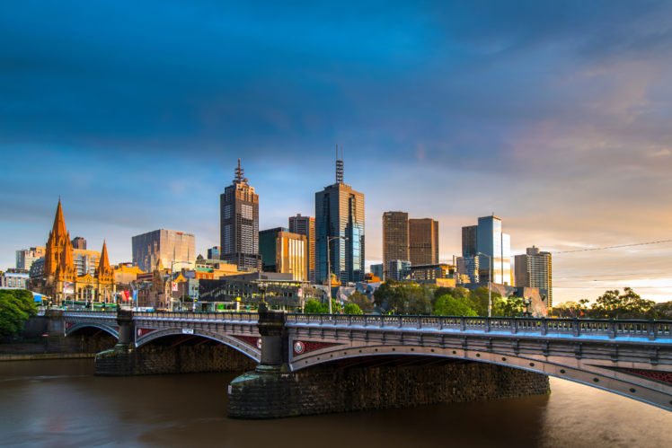

New York, often called New York City or NYC, is the most populous city in the United States. With a 2020 population of 8,804,190 distributed over 300.46 square miles (778.2 km2), New York City is also the most densely populated major city in the United States, and is more than twice as populous as second-place Los Angeles. New York City lies at the southern tip of New York State, and constitutes the geographical and demographic center of both the Northeast megalopolis and the New York metropolitan area, the largest metropolitan area in the United States both by population and by urban landmass. With over 20.1 million people in its metropolitan statistical area and 23.5 million in its combined statistical area as of 2020, New York is one of the world's most populous megacities, and over 58 million people live within 250 mi (400 km) of the city. New York City is a global cultural, financial, entertainment, and media center with a significant influence on commerce, health care and life sciences, research, technology, education, politics, tourism, dining, art, fashion, and sports. Home to the headquarters of the United Nations, New York is an important center for international diplomacy, and is sometimes described as the capital of the world.
Vancouver is a major city in western Canada, located in the Lower Mainland region of British Columbia. As the most populous city in the province, the 2021 Canadian census recorded 662,248 people in the city, up from 631,486 in 2016. The Greater Vancouver area had a population of 2.6 million in 2021, making it the third-largest metropolitan area in Canada. Greater Vancouver, along with the Fraser Valley, comprises the Lower Mainland with a regional population of over 3 million. Vancouver has the highest population density in Canada, with over 5,700 people per square kilometre,[6] and fourth highest in North America
Munich German: München is the capital and most populous city of the German state of Bavaria. With a population of 1,558,395 inhabitants as of 31 July 2020, it is the third-largest city in Germany, after Berlin and Hamburg, and thus the largest which does not constitute its own state, as well as the 11th-largest city in the European Union. The city's metropolitan region is home to 6 million people.[5] Straddling the banks of the River Isar (a tributary of the Danube) north of the Bavarian Alps, Munich is the seat of the Bavarian administrative region of Upper Bavaria, while being the most densely populated municipality in Germany (4,500 people per km2). Munich is the second-largest city in the Bavarian dialect area, after the Austrian capital of Vienna.

London is the capital and largest city of England and the United Kingdom, with a population of just under 9 million. It stands on the River Thames in south-east England at the head of a 50-mile (80 km) estuary down to the North Sea, and has been a major settlement for two millennia. The City of London, its ancient core and financial centre, was founded by the Romans as Londinium and retains its medieval boundaries. The City of Westminster, to the west of the City of London, has for centuries hosted the national government and parliament. Since the 19th century, the name "London" has also referred to the metropolis around this core, historically split between the counties of Middlesex, Essex, Surrey, Kent, and Hertfordshire, which since 1965 has largely comprised Greater London, which is governed by 33 local authorities and the Greater London Authority.

paris is the capital and most populous city of France, with an estimated population of 2,165,423 residents in 2019 in an area of more than 105 km² (41 sq mi), making it the 30th most densely populated city in the world in 2020. Since the 17th century, Paris has been one of the world's major centres of finance, diplomacy, commerce, fashion, gastronomy, and science. For its leading role in the arts and sciences, as well as its very early system of street lighting, in the 19th century it became known as "the City of Light".

Rome (Italian: Roma) is the capital city of Italy. It is also the capital of the Lazio region, the centre of the Metropolitan City of Rome, and a special comune named Comune di Roma Capitale. With 2,860,009 residents in 1,285 km2 (496.1 sq mi), Rome is the country's most populated comune and the third most populous city in the European Union by population within city limits. The Metropolitan City of Rome, with a population of 4,355,725 residents, is the most populous metropolitan city in Italy. Its metropolitan area is the third-most populous within Italy.
Tokyo is the capital and most populous city of Japan. Formerly known as Edo, its metropolitan area (13,452 square kilometers or 5,194 square miles) is the most populous in the world, with an estimated 37.468 million residents as of 2018; the city proper has a population of 13.99 million people. Located at the head of Tokyo Bay, the prefecture forms part of the Kantō region on the central coast of Honshu, Japan's largest island. Tokyo serves as Japan's economic center and is the seat of both the Japanese government and the Emperor of Japan.

Dubai is the most populous city in the United Arab Emirates (UAE) and the capital of the Emirate of Dubai, the most populated of the 7 emirates of the United Arab Emirates. Established in the 18th century as a small fishing village, the city grew rapidly in the early 21st century with a focus on tourism and luxury, having the second most five-star hotels in the world, and the tallest building in the world, the Burj Khalifa, which is 828 metres (2,717 ft) tall.
Mumbai also known as Bombay the official name until 1995) is the capital city of the Indian state of Maharashtra and the de facto financial centre of India. According to the United Nations, as of 2018, Mumbai is the second-most populous city in India after Delhi and the eighth-most populous city in the world with a population of roughly 20 million (2 crore). As per the Indian government population census of 2011, Mumbai was the most populous city in India with an estimated city proper population of 12.5 million (1.25 crore) living under the Brihanmumbai Municipal Corporation. Mumbai is the centre of the Mumbai Metropolitan Region, the sixth most populous metropolitan area in the world with a population of over 23 million (2.3 crore). Mumbai lies on the Konkan coast on the west coast of India and has a deep natural harbour. In 2008, Mumbai was named an alpha world city.

Melbourne is the capital and most populous city of the Australian state of Victoria, and the second-most populous city in both Australia and Oceania. Its name generally refers to a 9,993 km2 (3,858 sq mi) metropolitan area known as Greater Melbourne, comprising an urban agglomeration of 31 local municipalities, although the name is also used specifically for the local municipality of City of Melbourne based around its central business area. The metropolis occupies much of the northern and eastern coastlines of Port Phillip Bay and spreads into the Mornington Peninsula, part of West Gippsland, as well as the hinterlands towards the Yarra Valley, the Dandenong and Macedon Ranges. It has a population over 5 million (19% of the population of Australia, as per 2021 census), mostly residing to the east side of the city centre, and its inhabitants are commonly referred to as "Melburnians".